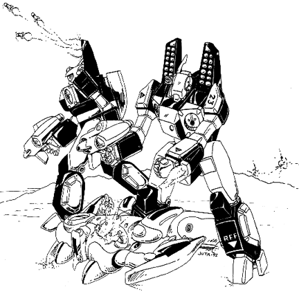

The following material is from
THE THIRD INVID
WAR, a fan supplement by
Dave Deitrich and
Chris
Meadows. Please feel free to use, copy, and distribute
it as you see fit. All we ask is that you give proper credit to us and do not
claim that it is your own work. Comments and suggestions are welcome.
VAF-9 HEAVY ASSAULT
VERITECH SHADOW FIGHTER
WARNING: EXTREMELY POWERFUL! This mecha is a very powerful
Veritech fighter and should be handled with care by GMs. Liberal application
of this design may be unbalancing to game play!

BACKGROUND
The VAF-9 Heavy Assault Alpha Fighter
was an experimental air/space superiority fighter
designed and produced during the early days of the Third Invid War. Intended
to be the spearhead of an assault to retake the Earth from the second invasion
force of Invid, the VAF-9 was definitely the most advanced mecha of the war and
probably one of the most advanced Veritechs of the 21st century. The VAF-9
incorporated all of the cutting-edge technology available to the REF R&D
scientists assigned to Project Shadowchaser. The mecha was designed
around the new FF-4000X Experimental
Fusion/Protoculture Variable Turbines, which could supply tremendous thrust
and maneuvering power both inside and outside of an atmosphere. The mecha was
made slightly larger to incorporate several new weapon systems, including the
new MM-74 SRM missile system and the TWR-30 head-mounted Pulse Lasers.
Another revolutionary system used with the VAF-9 was the Falcon MRM Missile
System; the Falcon system stored missiles inside the wings instead of on
hardpoints, allowing the mecha to convert into battloid mode and, if
necessary, use the missiles while in that mode. To top off the new mecha's
armaments, a pair of GR-12 shoulder mounted missile systems (formerly used on
the VAF-7A) were added, as well as a pair of caseless 32mm depleted uranium
autocannons mounted on the arms of the mecha. For a hand weapon, the VAF-9
was equipped with the EU-XX Destabilizer Cannon, the latest version of the
famous EU-12 and EU-13 Destabilizers used during the Second Invid War.
In terms of development, the VAF-9 Alpha was very much like the VAF-7A Alpha.
Both were revolutionary technical experiments that were pressed into service
by the REF to help reclaim the Earth. The disadvantage of the design was its
immense cost, however. The cost of a single VAF-9 was equal to an entire
SQUADRON of VAF-8 Alphas. In addition, the mecha was a nightmare for support
crews to maintain due to an immense number of special parts that were always
in short supply. But despite the costs, a squadron of 12 VAF-9 Alphas and 12
VBF-3 Betas (the counterpart to the VAF-9), were included with the Icarus
Recon Mission, and although records from the aftermath of that mission are
spotty it appears that all of them made it to Earth and into resistance hands.
Several squadrons of VAF-9 were included with the Prometheus Assault Group, and
were very effective during the final battles of the Third Invid War, even
though superior firepower from the Invid Orbiting Hives prevented the
Prometheus Group from ever gaining the upper hand.
NOTE: Due to their scarcity, encountering a VAF-9 Alpha on Earth during
the Third Invid War should be a VERY rare occurrance. Only 11 VAF-9s made it to
earth from the ill-fated Icarus Recon Mission, and of those 11 three have been
confirmed destroyed by the Invid. The fate of the remaining 8 is left up to the
GM, but players should be required to go on a LONG adventure and face MANY dangers
before they can get their hands on a VAF-9.
The VAF-9 was never mass-produced. After the end of the Third Invid War, a
number of squadrons were built to replace destroyed mecha, but distribution
of the fighters were never widespread. In 2058, Vanguard Aerospace
and Tirolian Weapons Research jointly produced the
VAF-9 Mark II, a
cheaper version of the VAF-9 incorporating updated technology. The VAF-9 Mk.
II replaced the VAF-8 as the standard Robotech Guardian Forces
(RGF) fighter
for a few years, but was itself replaced during the RGF reorganization of
2065. After that the original VAF-9s mostly disappeared, with only a few
surviving examples (minus weapons and armor) in the hands of museums or
private collectors.
The VAF-9 Heavy Assault Alpha Fighter vaguely resembles its distant cousin,
the VAF-6 Alpha Fighter, but is somewhat larger and much more streamlined and
as a more pronounced delta-wing design. Like the VAF-8, the color scheme for
the VAF-9 is based on where the unit is stationed, i.e. space Veritechs are
usually painted flat black, desert Veritechs are painted with a light tan
camouflage, etc. The Veritech is always streamlined with a color to indicate
it's model type. VAF-9C's are streamlined in blue, VAF-9J's in red, and VAF-
9S's in green. Each model also has a unique head style, but unlike the
original VF-1 Veritech all three models have the exact same armament.
SCHEMATICS
 Click on the icon to the left to view some schematics from the REF VAF-9 Alpha
Fighter development report, document REF-A1-4432-1744, TOP SECRET!
Click on the icon to the left to view some schematics from the REF VAF-9 Alpha
Fighter development report, document REF-A1-4432-1744, TOP SECRET!
RPG STATS
| Vehicle Type: |
Heavy Assault Stealth Veritech Fighter |
| Models: |
VAF-9C (Standard Model)
VAF-9J (Low-Ranking Officer Model)
VAF-9S (Squadron Leader Model) |
| Crew: |
One |
M.D.C. BY LOCATION
(1) Sensor Head 75
Head Lasers (2) 30 each
Hands (2) 60 each
Forearms/Machine guns/Missiles (2) 350 each
Shoulders/Missile Pods (2) 150 each
Upper Legs (2) 150 each
Lower Legs/Thrusters/Missile Pods (2) 250 each
Wings/Missile Sheaths (2) 180 each
Wing Hardpoints (4) 10 each
Tail (2) 75 each
(2) Main Body 460
Reinforced Pilot's Compartment 220
EU-XX Gun Pod 120
- Destruction of the sensor head will greatly reduce the pilot's sensory and
targeting equipment, though backup systems prevent total sensory
blindness. Long-range radar is reduced to 2 mile range. Radio and Laser
communication systems are lost, but an auxiliary system provides voice-
only radio with a 100 mile range. Head Spotlights, Thermo-Imager, Night
vision Optics, Audio Pickup, and Head Lasers are lost. Laser targeting
is also destroyed; -1 to strike.
- Destruction of the main body will shut the unit down completely.
NOTE: The VAF-9 Series Veritech incorporates the Southern Cross' laser
resistant ceramic armor, so laser weapons do only HALF damage. This
does NOT include any other energy attacks such as particle beams or ion
blasts, nor does it help against explosives.
SPECIFICATIONS
| Jet Mode: |
Mach 4.0 (2676 mph/4281.6 kmph). |
| Jet Cruising Speed: |
Mach 1.2 (804 mph/1286.4 kmph). |
| Guardian Mode: |
Hover stationary to Mach 1.5 (1005 mph/1608 kmph). |
| Battloid Mode, Flying: |
Hover stationary to about Mach 1 (670 mph/1072 kmph). |
| Battloid Mode, Running: |
180 mph (290 kmph) |
| Battloid Mode, Leaping: |
100 ft (30.5 m) up or across without using jet
boosters, 350 ft (106.8 m) with jet boosters. |
| Height: |
34.5 ft (10.5 m) in battloid mode.
22.2 ft (6.8 m) in guardian mode.
16.5 ft (5.0 m) in jet mode. |
| Width: |
15 ft (4.6 m) at shoulders in battloid mode.
34.5 ft (10.5 m), jet and guardian modes with wings fully swept. |
| Length: |
36 ft (11 m), in jet and guardian modes. |
| Weight: |
14.2 tons without missiles, 20.6 tons fully loaded. |
| Cargo: |
Space behind pilot's seat for pilot's belongings; can hold about 100
lbs (45.4 kg). If Cyclone is removed from its storage compartment,
the compartment can hold an additional 500 lbs (226.8 kg). |
| Main Engine: |
FF-4000 fusion/protoculture turbine in each leg. |
| Range: |
24 protoculture cells will give the mecha an active combat life of
about two years. The mecha can operate on half as many cells (12) for
12 months, but maximum speed is reduced by half and the mecha is at -1
to strike. As a last resort, the mecha can operate solely on fusion
power, but maximum speed is reduced by 75%, the head lasers cease to
function, and the mecha is at -2 to strike and -2 to dodge. |
WEAPON SYSTEMS
- HEAD MOUNTED TWR-30 PULSE LASERS (2): Two Tirolian-designed
pulse lasers
are mounted in the head of the Veritech. They can fire individually or in
tandem, and are aimed by moving the mecha's head.
- Primary Purpose: Anti-personnel, Anti-aircraft
- Mega-Damage: 4D6 M.D. per individual blast or 8D6 M.D. per dual
blast.
- Payload: Unlimited
- Range: 4000ft (1200m)
- MM-74 MULTI-MISSILE SYSTEM: Like their predecessors, the VAF-9
Assault
Alphas are bristling with short range missiles, 74 in all. 12 missiles
are located in each forearm (6 on each side), 12 are located in each
Shoulder, and 13 are located in each leg.
- Primary Purpose: Assault
- Secondary Purpose: Anti-Mecha
- Missile Type: Standard REF short-range missiles, usually high
explosive,
armor-piercing, or plasma.
- Mega-Damage: Varies with missile type.
- Rate of Fire: One at a time or in volleys of two, four, eight,
sixteen,
thirty-two, or all. Remember, a volley counts as one melee attack
regardless of the number of missiles.
- Range: Varies with missile type; 1 to 5 miles.
- Payload: A maximum capacity of 74 short-range missiles. Mini,
medium and
long range missiles can not be used.
- GR-12 SHOULDER LAUNCHER SYSTEM: This additional pair of missile
launchers, once exclusive to the old VAF-7A Shadow Alphas, are now
standard equipment for VAF-9 Veritechs. These systems add an extra 24
short-range missiles to its armaments.
- Primary Purpose: Assault/Defense
- Missile Type: Standard REF short-range missiles, usually
armor-piercing or
plasma.
- Mega-Damage: Varies with missile type.
- Rate of Fire: One at a time or in volleys of two, four, six, or
twelve
(all).
- Range: Varies with missile type; 1 to 5 miles.
- Payload: Twelve in each unit, for a total of 24.
- ARM MOUNTED 32mm-caseless AUTOCANNONS (4): These weapons were
added to
give the Alpha Fighter an additional attack for use in close-range combat.
Each forearm has two concealed autocannons that fire in tandem.
- Primary Purpose: Close-range Assault/Defense
- Secondary Purpose: Antipersonnel
- Mega-Damage: 2D6 M.D. for short burst, 4D6 M.D. for long burst,
or 2D4x10
M.D. for one full melee of continuous fire (each burst is considered to
be one attack, regardless of length).
- Payload: 480 rounds in each arm (short burst uses 6 rounds, long
burst 12
rounds, and full burst 24 rounds)
- Range: 2000 ft (609 m)
- FALCON WING-SHEATH MISSILE SYSTEM: Three heavily-shielded
medium-range
missile launchers are built into each wing. The launchers are flush with
each wing, which reduces drag and protects the missile from attack until
launched. Each missile launcher can hold one missile, but the missile is
fully shielded and does not need to be launched before the Veritech can
convert to battloid mode.
- Primary Purpose: Assault
- Missile Type: Standard REF medium-range missiles, usually
multi-warhead or
plasma.
- Mega-Damage: Varies with missile type.
- Rate of Fire: One at a time or in volleys of two, four, or six (all).
- Range: Varies with missile type; 50 to 80 miles.
- Payload: One per unit, for a total of 6.
- WING HARDPOINTS: The VAF-9 has four hardpoints (2 per wing)
which can be
used to mount missiles and other ordinance for heavy assaults and
bombardments. Each hardpoint can mount 1 long range missile, 3 medium
range missiles, or one pod of mini-missiles. Due to the design of the
wings, the missiles or pods must be dropped prior to transformation into
battloid mode.
NOTE: VAF-9s found in the field will typically NOT be equipped with
missiles on their hardpoints, as these missiles are usually used up within
the first few minutes of combat.
- LONG RANGE MISSILES
- Primary Purpose: Heavy Assault
- Secondary Purpose: Anti-Spacecraft
- Missile Type: Standard REF long-range missiles, usually proton,
reflex heavy and reflex multi-warhead.
- Mega-Damage: Varies with missile type.
- Rate of Fire: One, two, three, or four.
- Range: Varies with missile type; 500 to 1800 miles.
- Payload: One per hardpoint; up to four maximum.
- MEDIUM RANGE MISSILES
- Primary Purpose: Heavy Assault
- Secondary Purpose: Anti-Mecha
- Missile Type: Standard REF medium-range missiles, usually high
explosive, armor piercing, or multi-warhead.
- Mega-Damage: Varies with missile type.
- Rate of Fire: One, two, three, four, eight, or twelve (all).
- Range: Varies with missile type; 50 to 80 miles.
- Payload: Three per hardpoint; up to 12 maximum.
- MINI-MISSILE PODS
- Primary Purpose: Assault/Defense
- Secondary Purpose: Anti-Personnel
- Type: Any except plasma. Armor-Piercing is standard issue.
- Mega-Damage: Varies with mini-missile type; usually about one
mile.
- Rate of Fire: Volleys of two, four, or eight
- Range: Varies with missile type
- Payload: 15 per launcher; up to 60 maximum.
- EU-XX DESTABILIZER GUN POD. The powerful Destabilizer that was the
standard weapon for the Shadow Fighters and Vindicators has been
redesigned and streamlined. Two EU-XX gun pods can be carried and
used by the VAF-9 Alpha fighter, though usually only one is issued per
fighter. The EU-XX can be mounted on the top or the undercarriage of the
fighter. It can be fired in any mode, either from it's mounted position
or hand-held by the mecha.
Against Invid or Zentraedi force fields, each blast will create a 6D6 foot
hole in the field, which will last for 4D6 minutes. Against exterior hive
entrances, the Destabilizer will disrupt the field completely for 4D6+20
minutes. Note that the EU-XX does not need to be shoulder-mounted to fire
destabilizing bursts.
- Primary Purpose: Assault
- Secondary Purpose: Force field disruption.
- Mega-Damage: 2D4x10 per blast (bursts are NOT possible).
- Rate of Fire: Equal to the pilot's combined hand to hand melee
attacks
(usually 4 or 5).
- Payload: 40 blasts
- Range: 4000 ft (1200 m)
- NOTE: Four EU-XX energy clips can be stored in the legs (two in
each leg).
It requires one full melee (15 seconds) to reload a clip. Only the
biggest REF ships and bases can recharge EU-XX energy clips.
- OPTIONAL USE OF THE GU-11, EU-5, EU-11, E-20, GU-XX, OR EU-12 GUN
PODS.
These are obviously not standard issue, but can be used if needed and
available. See the various mecha for weapon statistics.
- OPTIONAL HAND-TO-HAND COMBAT. Punch does 1D6 M.D., Body Block
does 1D6
M.D., Kick does 1D6 M.D., Leap Kick does 2D6 M.D., Stomp does 1D4 M.D.,
but is limited to targets no more than 12 feet tall. Body Flip and Body
Block does 1D6 M.D.
STANDARD SENSORS AND EQUIPMENT FOR VAF-9 ALPHA FIGHTERS
- SF-10 SHADOW CLOAKING DEVICE:
Like the VAF-8, the VAF-9 Alpha Fighter is
designed to use the SF-10 Cloaking Device, the new standard cloaking device
for the REF. A much improved version of the original SF-7 cloaking device,
this version incorporates changes that makes the device smaller and more
affordable to manufacture. The device still operates like older versions;
rendering the mecha invisible to all electronic forms of detection,
including radar, Invid Protoculture sensors, and microwaves. Only light-
based detection systems, such as optical and laser tracking will detect the
mecha.
The SF-10 is the first cloaking device to feature THREE modes of operation
instead of only two: ON, in which the device operates normally; OFF, in
which the device is shut off and the mecha is detectable by all forms of
electronic detection; and SAFETY, in which the device emits a "4th
dimensional blip," which is detectable by other REF mecha's collision
warning systems. The SAFETY mode is used for close formations where mecha
proximity could potentially cause disastrous collisions.
The SF-10 is slightly more reliable than its predecessor. Once the main
body MDC of the fighter has been reduced to 200 M.D. or less, there is a
cumulative 10% chance of the SF-10 failing for every 20 points of damage
beyond that. For example,there is a 10% chance of the device failing when
the main body MDC is between 200-180, 20% when the MDC is between 160-180,
30% when the MDC is between 140-160, etc. Once a cloaking device fails it
CANNOT be repaired; it must be replaced by another working SF-10, either
from a salvaged fighter or a parts depot.
BONUSES: (ON and SAFETY modes) The Veritech always gets first
attack in the
first round of combat. After that, the mecha has a +3 on all initiative
rolls. Also provides an additional +2 to dodge, and +1 to strike.
- LASER-RESISTANT CERAMIC COATING: A Southern Cross invention,
this coating
scrambles laser tracking and reduces laser damage by half (lasers ONLY).
- RADAR: The VAF-9 is equipped with a dual radar system. The first
system is a long range radar that has a range of over 100 miles (160
km) and
can track up to 30 targets simultaneously within that range. The problem
with the system, however, is that the powerful long distance radar waves
tend to give away the position of the craft; attackers using radar-guided
weaponry have a +2 to hit the VAF-9 while the system is on.
The second radar is a combat radar that has a range of 15 miles
(24 km) and can identify and track up to 150 targets simultaneously. This
radar uses frequency hopping and a number of other techniques to prevent
its emissions from giving away the position of the VAF-9.
NOTE: In general, Invid do NOT use radar-tracking weapons.
- RADIO COMMUNICATIONS: Wide band and directional radio and video
telecast
capabilities. Range is 750 miles (1180 km) or can be boosted indefinitely
via satellite relay.
- LASER COMMUNICATIONS: Long-range, directional communication system.
Effective range: 100,000 miles (157,500 km).
- COMBAT COMPUTER: Calculates, stores, and transmits data onto
the cockpit
computer screen or heads-up display (H.U.D.) of the pilot's helmet.
Patches in with targeting computer.
- TARGETING COMPUTER: Assists in the tracking of enemy targets
and is partly
responsible for the VAF-9's high strike bonus.
- LASER TARGETING SYSTEM: 100 mile (160 km) range. Assists in
the striking
of enemy targets and is partly responsible for the VAF-9's high strike
bonus.
- MOTION DETECTOR AND COLLISION WARNING SYSTEM: 500 ft (152.5 m)
range.
Sounds an alarm and red light warns pilot of impending collision and/or
immediate target.
- TELESCOPIC OPTICAL ENHANCEMENT: 2000 ft (609 m) range. 20 ft
(6.1 m)
field of vision.
- HEAD SPOTLIGHTS: 600 ft (182 m) range, normal light.
- INFRARED SPOTLIGHT: 2000 ft (609 m) range. The infrared
spotlight sits in
the front of the sensor head. It emits an infrared light beam that is
invisible to the normal eye. However, an enemy with infrared optics can
easily see the beam of light and track it to the Veritech. Smoke impairs
vision/beam.
- THERMO-IMAGER: 2000 ft (609 m) range. A special optical heat
sensory unit
that allows the infrared radiation of warm objects to be converted into a
visible image. It also enables the pilot to see in darkness, shadows and
through smoke.
- NIGHT VISION OPTICS: 2000 ft (609 m) range. An image
intensifier that is
passive, meaning it emits no light of its own, but relies on ambient light
which is electronically amplified to give a visible picture. Night vision
can not work in absolute darkness (but infrared can).
- EXTERNAL AUDIO PICKUP: 300 ft (91.5 m) range. A sound
amplification
listening system that can pick up a whisper 300 ft away.
- EXTERNAL VIDEO SURVEILLANCE SYSTEM: 600 ft (183 m) range. A
video camera
system with telescopic capabilities (8x magnification) is built into the
head. The video images can be relayed to a cockpit monitor and stored on
removable video disks. Maximum disk capacity is 24 hours. Disks can be
erased and reused.
- EJECTOR SEAT: In case of an emergency, the pilot can be
instantly ejected.
In battloid mode, the pilot is ejected out of the mecha's back.
- CE-1 CYCLONE EJECTOR SYSTEM: Also in case of an emergency, the
VR-135
Forager Cyclone will also be ejected from the doomed mecha. This system is
activated automatically when the pilot pulls the activation lever for his
ejection seat. The cyclone will deploy parachutes once outside of the
mecha and then land within 1D6x1000 feet of the pilot. This system was
installed to allow pilots to retrieve their cyclones even after their
veritechs had been destroyed.
- SELF-DESTRUCT: A last ditch effort to prevent the capture of a
Veritech
unit (usually preceded by the pilot's ejection from the Veritech) is self-
destruction. Explosive damage is fairly contained. A VAF-9 Alpha without
missiles (or few) does 2D6 x 10 M.D., but a Veritech with all or most of
its missiles (35 or more) will do 2D6 x 100 M.D. to a 50 ft (15.2 m)
radius.
- SMOKE SCREEN SYSTEM: The VAF-9 Assault Alpha can emit a thick
cloud of
smoke from its rear to create immediate cover. The smoke screen system can
discharge a maximum of 4 bursts before needing replacement (smoke missiles
can be converted to function in the system). Each burst will cover a 60 ft
area (19.8 m).
- HEAT AND RADIATION SHIELDS: Special shielding prevents the
penetration of
life-threatening heat and radiation.
- INDEPENDENT OXYGEN AND CIRCULATORY SYSTEM: Built-in tanks
provide 48 hours
of continuous oxygen. A special recycling system can keep the air
breathable for a maximum of one week.
- SURVIVAL GEAR: The VAF-9 includes a VR-135 Forager Cyclone, four
weeks'
compact emergency rations, an emergency signal beacon, three first-aid
kits, and a life raft. There is space for an energy rifle to be attached
to each ejector seat, and the pilot can of course carry a side-arm.
This document was originally converted to HTML by Joshua
Megerman
megermjs@newton.physics.drexel.edu
st92bb10@post.drexel.edu